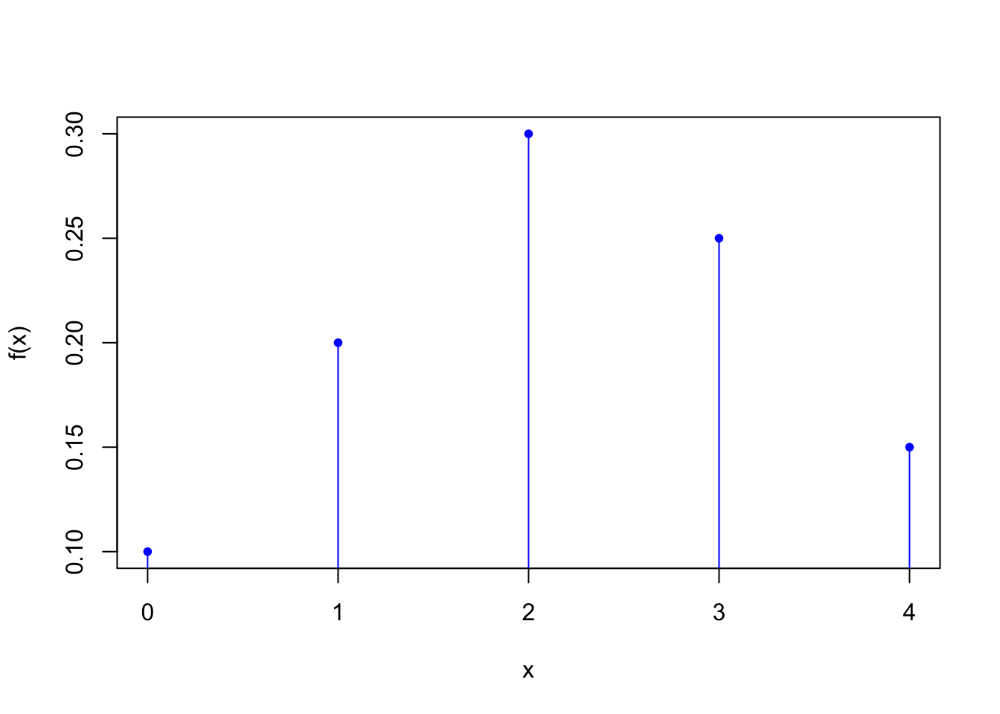
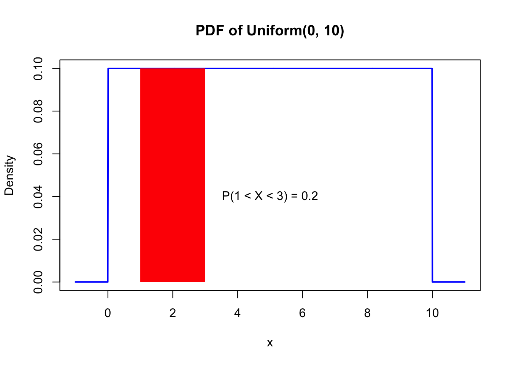
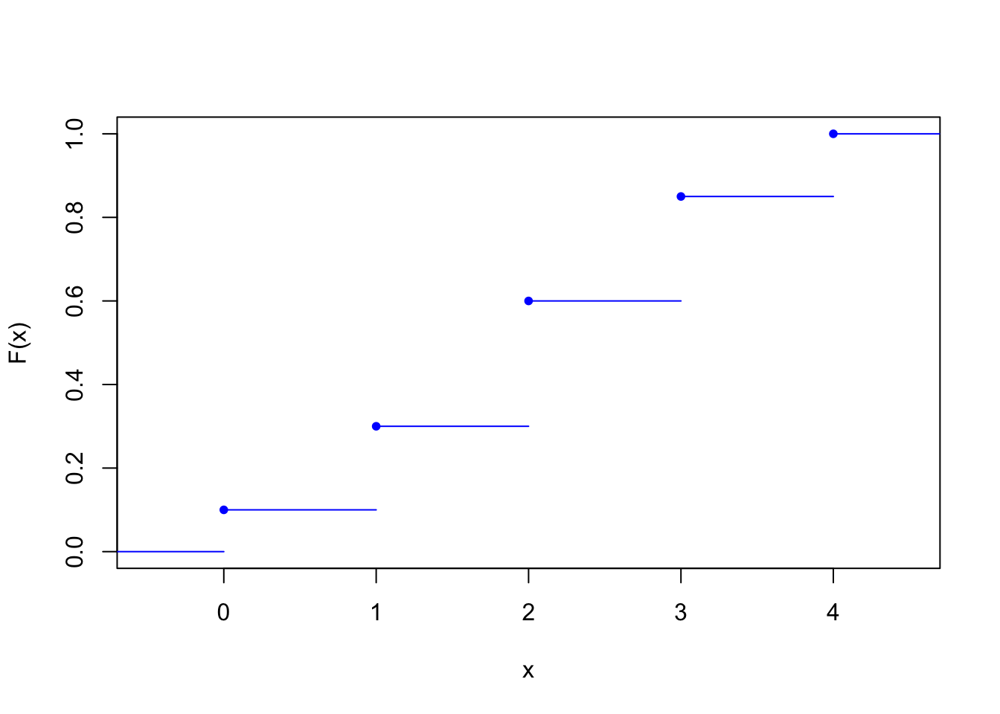
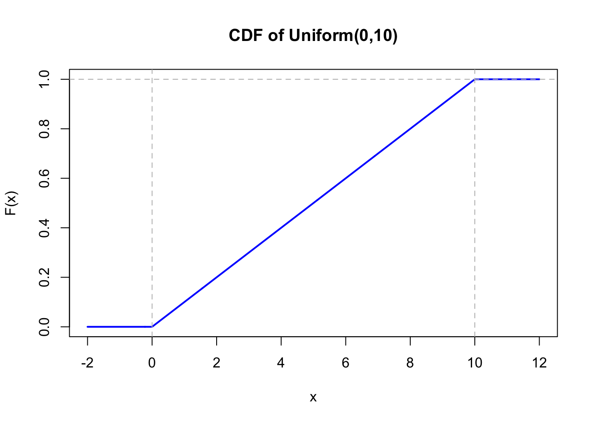
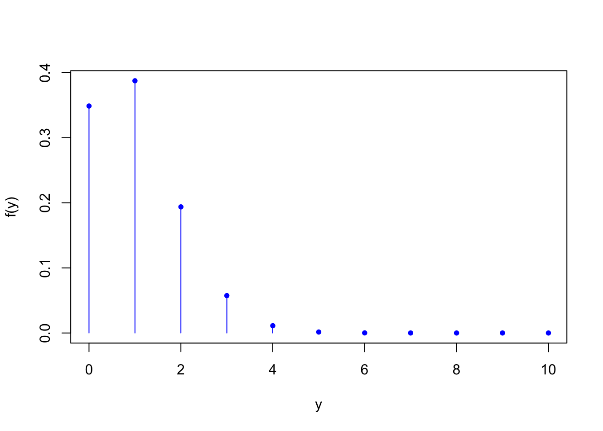
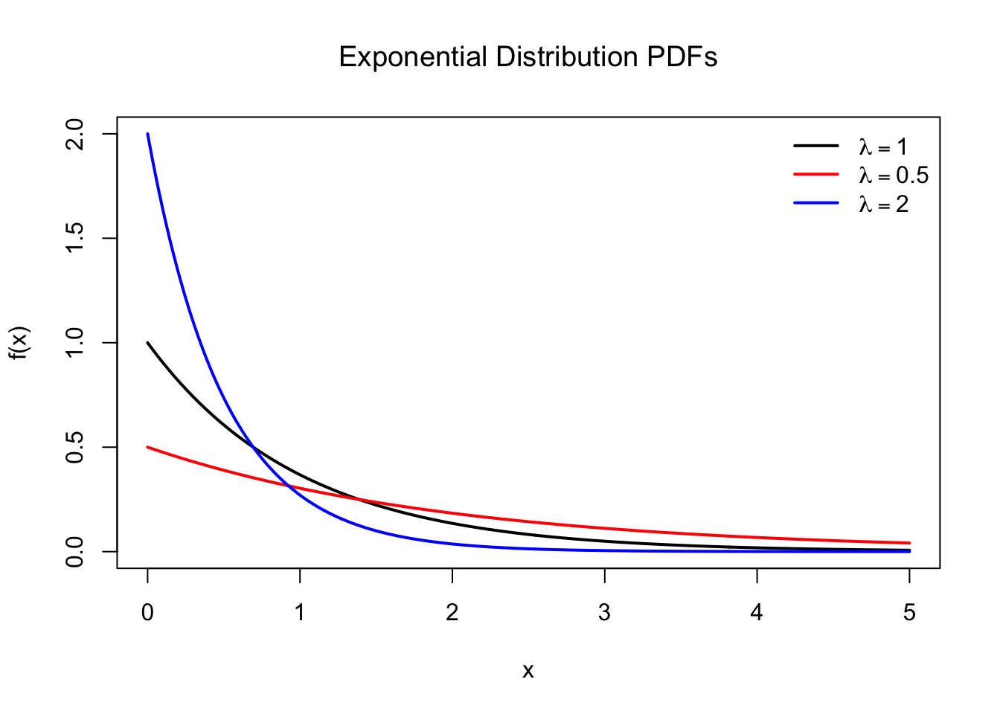
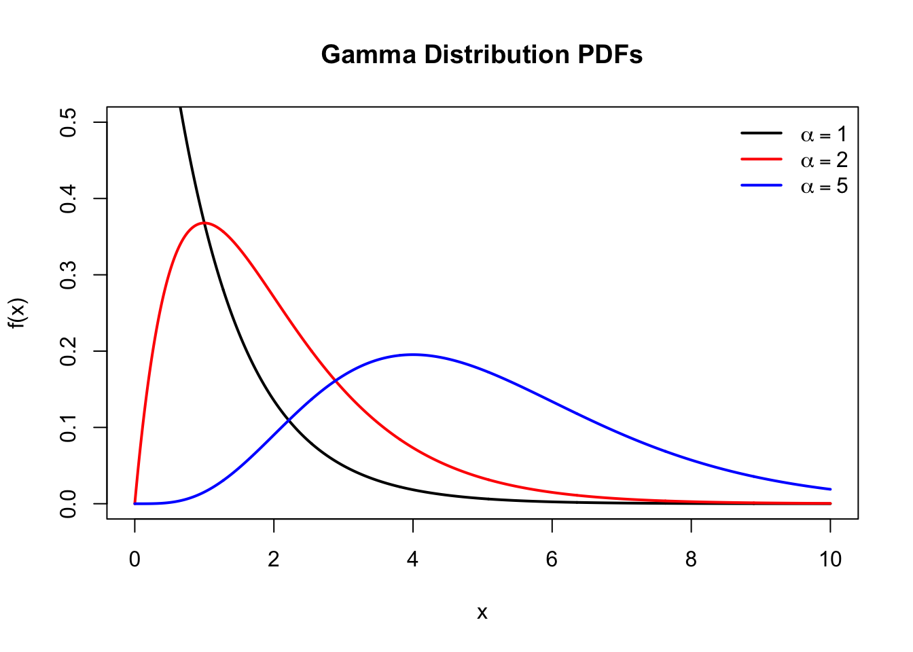
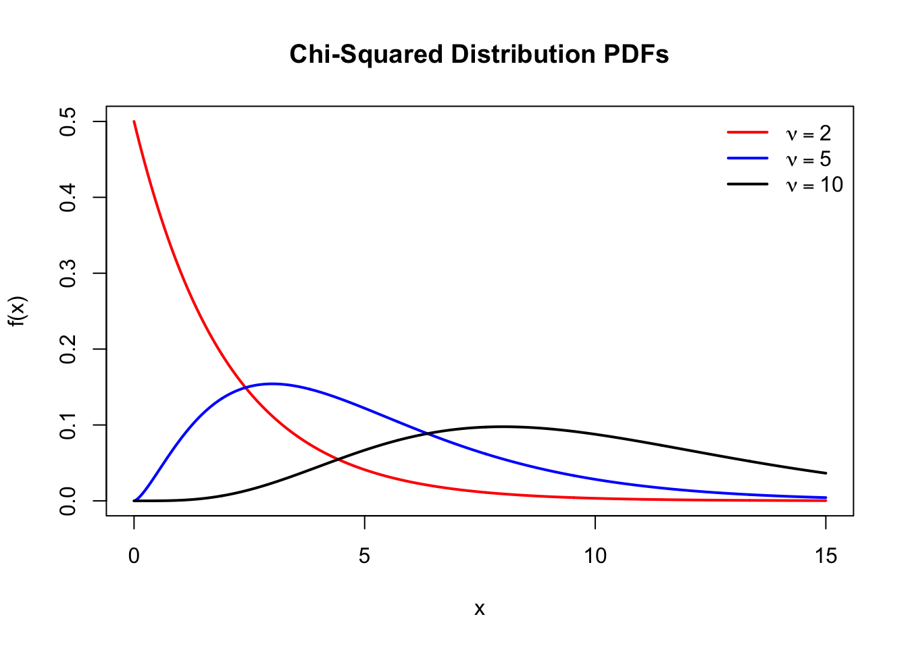

Chapter 4 Random Variables and Probability Distributions
In Statistics, we often have a dataset that we wish to explore and learn from. Typically, the dataset consists of a sample from our population of interest, and the observed values in the dataset are subject to randomness due to the nature of selecting the individuals to sample and then observing or measuring specific pieces of information as variables. Because of the randomness that typically affects the observed values in the dataset, we can think of our variables as being random variables. Thus, in order to learn from a dataset, we apply probability theory to characterize and work with random variables.
4.1 Random Variables
Definition 4.1 A random variable (rv) is a rule that associates a number with each outcome of the sample space of a random experiment.
We generally denote random variables by uppercase letters, such as \(X\), \(Y\), or \(Z\). From this point on in the book, we will use lowercase letters (\(x\), \(y\), \(z\)) to denote particular values of random variables.
Example 4.1 The sample space for the random experiment of flipping a coin is \(\mathcal{S} = \{H, T\}\). We can define the rv \(X\) as equal to 0 if the result of the flip is tails and 1 if the result is heads. If we were to actually carry out a coin flip and observe, say, tails, we could then say that we observed \(x = 0\).
Example 4.2 Define the rv \(Y\) as the number of calls to a help center in one week. The possible values of \(Y\) are \(0, 1, 2, \ldots\) (in theory, continuing to infinity).
Example 4.3 Let \(Z\) be the percent purity of a chemical compound. \(Z\) can take any value in the interval \([0, 100]\).
In the first two examples, the random variables were discrete, while the rv in the third example was continuous.
Definition 4.2 A discrete random variable is an rv that can take a finite or at most countably infinite number of values. A continuous random variable is an rv that can take any value within an interval (possibly infinite) of the real number line. We will use the notation \(S_X\) to denote the possible values of a discrete rv \(X\).
Almost always, \(S_X\) will be the first few counting numbers (say, 0, 1, 2, ...)
4.2 Probability Functions
The probability distribution of an rv describes how much probability to assign to each value. There are a few functions that completely characterize a probability distribution. We will begin with the probability mass function for a discrete rv and then turn to the probability density function for a continuous rv.
4.2.1 Probability Mass Function (Discrete RVs)
Definition 4.3 The probability mass function (pmf) of a discrete rv \(X\) is a function that returns the probabilities \(f(x) = P(X = x)\) for each value \(x\) in \(\mathcal{S}_X\).
That is, the pmf defines the probability associated with each possible value of the discrete rv \(X\). Note that we must have that \(f(x) \geq 0\) for all \(x\) in \(\mathcal{S}\) and \(\sum_{x} f(x) = 1\).
Example 4.4 In the coin flip example, suppose we purchase a special coin that is biased to land on heads with probability 0.6. With \(X\) again defined to be 0 in the case of tails and 1 in the case of heads, the pmf of \(X\) would have \(f(0) = 0.4\) and \(f(1) = 0.6\). To fully define the function, we can use the following: \[ f(x) = \begin{cases} 0.4 & \text{if } x = 0 \\ 0.6 & \text{if } x = 1 \\ 0 & \text{if } x \neq 0 \text{ or } 1 \end{cases} \]
Example 4.5 Suppose we are studying the activity levels of a certain enzyme in a population of cells. The enzyme's activity can be categorized into five discrete levels. Let \(X\) be the rv that takes the values 0, 1, 2, 3, 4 if the activity level is very low, low, moderate, high, or very high, respectively. The pmf of \(X\) is \[ f(x) = \begin{cases} 0.10 & \text{if } x = 0 \\ 0.20 & \text{if } x = 1 \\ 0.30 & \text{if } x = 2 \\ 0.25 & \text{if } x = 3 \\ 0.15 & \text{if } x = 4 \\ 0 & \text{if } x \neq 0,1,2,3, \text{ or } 4 \end{cases} \] Figure 4.1 is a line graph visualization of the pmf.

Figure 4.1: Enzyme activity example pmf
4.2.2 Probability Density Function (Continuous RVs)
Definition 4.4 The probability density function (pdf) of a continuous rv \(X\) is a function \(f(x)\) such that, for any two numbers \(a\) and \(b\) with \(a \leq b\), \[ P(a \leq X \leq b) = \int_a^b f(x) dx \]
That is, the probability that \(X\) takes a value in the interval \([a, b]\) equals the area under \(f(x)\) between \(a\) and \(b\) (an integral of \(f(x)\)). Note that \(f(x)\) is not equal to \(P(X = x)\). In fact, due to the continuous nature of the rv \(X\), \(P(X = x) = 0\). The pdf (as opposed to the pmf) can only be interpretted in terms of an integral over an interval.
Example 4.6 Consider the time a student spends waiting for her bus to arrive. Suppose that the bus arrives at the stop every 10 minutes. If the student arrives at the bus stop at a randomly-specified time, without regard for the bus schedule, we might assume that the time spent (in minutes) waiting will follow the uniform distribution on the interval \([0, 10]\).
The pdf of a rv \(X\) from the uniform distribution on the interval \([a, b]\) is \[ f(x) = \begin{cases} \frac{1}{b-a} & \text{if } a \leq x \leq b \\ 0 & \text{otherwise} \end{cases} \] In our example, we have \(a = 0\) and \(b = 10\), so our pdf would be \(f(x) = 1/10\) for all \(0 \leq x \leq 10\); reference Figure 4.2. Suppose we want to compute the probability that the student must wait between 1 and 3 minutes. The probability can be expressed as the following integral: \[ P(1 \leq X \leq 3) = \int_1^3 f(t) dt = \int_1^3 \frac{1}{10} dt = \frac{2}{10} \] The last equality reflects the fact that the uniform pdf is a rectangle, making our desired probability the area of a rectangle (height times width).

Figure 4.2: Bus wait example pdf
4.3 Cumulative Distribution Function
The pmf can be used to completely specify the probability distribution of a discrete rv. However, an alternative way to completely specify a probability distribution is in terms of cumulative probabilities of the form \(P(X \leq x)\).
Definition 4.5 The cumulative distribution function (cdf) of a discrete rv \(X\) with pmf \(f(x)\) is a function that returns the (cumulative) probabilities \[ F(x) = P(X \leq x) = \sum_{t: t \leq x} f(t) \] for each value \(x\) in \(\mathcal{S}_X\).
Example 4.7 Returning to the context of Example 4.5, we can obtain the cdf of \(X\) by computing \(F(x)\) for each \(x\) in \(\{0, 1, 2, 3, 4\}\): \[\begin{align*} F(0) &= P(X \leq 0) = P(X = 0) = f(0) = 0.10 \\ F(1) &= P(X \leq 1) = P(X = 0 \text{ or } 1) = f(0) + f(1) = 0.30 \\ F(2) &= P(X \leq 2) = P(X = 0 \text{ or } 1 \text{ or } 2) = f(0) + f(1) + f(2) = 0.60 \\ F(3) &= P(X \leq 3) = P(X = 0 \text{ or } 1 \text{ or } 2 \text{ or } 3) = f(0) + f(1) + f(2) + f(3) = 0.85 \\ F(4) &= P(X \leq 4) = P(X = 0 \text{ or } 1 \text{ or } 2 \text{ or } 3 \text{ or } 4) = 1 \end{align*}\] The cdf would then be the step function shown in Figure 4.3.

Figure 4.3: Enzyme activity example cdf
There are only probability "jumps" or "steps" at the values \(x\) in \(\{0, 1, 2, 3, 4\}\). For any other \(x\) value, \(F(x)\) is defined to be the cumulative probability for the nearest possible value of the rv \(X\) that is to the left of \(x\). For example, \(P(X \leq 1.4) = P(X \leq 1) = F(1) = 0.30\). We can now write the cdf as \[ F(x) = \begin{cases} 0 & \text{if } x < 0 \\ 0.10 & \text{if } 0 \leq x < 1 \\ 0.30 & \text{if } 1 \leq x < 2 \\ 0.60 & \text{if } 2 \leq x < 3 \\ 0.85 & \text{if } 3 \leq x < 4 \\ 1 & \text{if } 4 \leq x \end{cases} \]
In Example 4.7, we derived the cdf from the pmf. Note that we can also derive the pmf from the cdf. For example, \[\begin{align*} f(2) &= P(X = 2) \\ &= [f(0) + f(1) + f(2)] - [f(0) + f(1)] \\ &= P(X \leq 2) - P(X \leq 1) \\ &= F(2) - F(1) \end{align*}\] More generally, we can use the cdf to compute the probability that \(X\) falls within any interval. For example, again with reference to Example 4.7, \[\begin{align*} P(1 \leq X \leq 3) &= f(1) + f(2) + f(3) \\ &= [f(0) + f(1) + f(2) + f(3)] - f(0) \\ &= P(X \leq 3) - P(X \leq 0) \\ &= F(3) - F(0) \end{align*}\]
Proposition 4.1 Let \(X\) be a discrete rv with possible values \(\mathcal{S}_X = \{x_1, x_2, \cdots\}\). The probability of an event of the form \([a \leq X \leq b]\) can be written in terms of the pmf as \[ P(a \leq X \leq b) = \sum_{a \leq x_i \leq b} f(x_i) \] and in terms of the cdf as \[ P(a \leq X \leq b) = F(b) - F(a-) \] where "\(a-\)" represents the largest possible \(X\) value that is strictly less than \(a\). In particular, if all of \(x_1, x_2, \ldots\) are integers and if \(a\) and \(b\) are integers, then \(P(a \leq X \leq b) = F(b) - F(a-1)\). Note the special case that when \(a = b\), \(P(X = a) = F(a) - F(a-1)\).
Note that we can similarly use the cdf of a continuous rv to derive its pdf via the relationship \(f(x) = F'(x)\); that is, the pdf is obtained by differentiating the cdf.
Definition 4.6 The cdf of a continuous rv \(X\) with pdf \(f(x)\) is a function that returns the cumulative probability \[ F(x) = P(X \leq x) = \int_{-\infty}^{x} f(t) dt \]
Example 4.8 Recall Example 4.6. The waiting time \(X\) (in minutes) follows a uniform distribution on the interval \([0, 10]\), i.e., \(X \sim \text{Uniform}(0,10)\). The cdf \(F(x)\) is obtained by integrating the pdf:
\[ F(x) = P(X \leq x) = \int_0^x \frac{1}{10} dt = \frac{x}{10}, \quad 0 \leq x \leq 10 \]
which leads to the full definition:
\[ F(x) = \begin{cases} 0, & x < 0 \\ \frac{x}{10}, & 0 \leq x \leq 10 \\ 1, & x > 10 \end{cases} \]
Figure 4.4 shows the graph of the cdf.

Figure 4.4: Bus wait example cdf
Suppose we want to compute the probability that a student must wait no more than 3 minutes for the bus. Using the CDF:
\[ P(X \leq 3) = F(3) = \frac{3}{10} = 0.3 \]
We can confirm the calculation in R using punif:
## [1] 0.34.4 Discrete Distributions
4.4.1 Binomial Distribution
A Bernoulli trial describes any random experiment that generates two outcomes. These are conventionally referred to as a "success" or a "failure". A Bernoulli random variable \(X\) takes the value 1 if the outcome is a success and the value 0 if it is a failure.
Example 4.9
- Flip a coin and designate heads as success and tails as failure.
- A cancer patient is either in remission (success) or not (failure).
- A smartphone is either defective (failure) or not (success).
In each case, we could use the rv \(X\) to denote the outcome of an individual trial. Note that the choice of which outcome to call "success" is arbitrary.
Let \(p\) be the probability of success for a Bernoulli rv (\(p = P(X = 1)\)). We can write the pmf simply: \[ f(x) = p^x(1-p)^{1-x} \] That is, \(f(x) = p\) when \(x = 1\) and \(f(x) = 1-p\) when \(x = 0\).
Now consider running \(n\) Bernoulli trials, each with the same probability \(p\) of success, and with each trial being independent of all others, and suppose that we will count up the number of successes out of the \(n\) trials. This is defined as a binomial experiment, and the variable \(X\) that records the number of successes out of the \(n\) trials is called a binomial random variable.
Letting \(X_i\) be the Bernoulli rv associated with the \(i\)th Bernoulli trial, we can write the binomial rv \(Y\) as \[ Y = \sum_{i=1}^n X_i \] Thus, \(Y\) can take any of the integer values between 0 (all \(X_i = 0\)) and \(n\) (all \(X_i = 1\)), inclusive. We will write \(Y \sim \text{Bin}(n, p)\) to indicate that \(Y\) is a binomial rv and its probability distribution has parameters \(n\) and \(p\).
We will now derive the binomial pmf. To begin, consider the case where \(n = 5\) (e.g., we flip a coin 5 times and count the number of heads) and suppose that we wish to compute the probability of the specific outcome \(FFFSS\) (that is, the first 3 flips are tails and the last 2 flips are heads). Since the trials are independent, the probability of this outcome is the product of the individual Bernoulli probabilities: \[\begin{align*} P(FFFSS) &= P(F) \cdot P(F) \cdot P(F) \cdot P(S) \cdot P(S) \\ &= (1-p) \cdot (1-p) \cdot (1-p) \cdot p \cdot p \\ &= p^2 (1-p)^3. \end{align*}\]
While it is true that \(Y = 2\) in the above scenario, it is not true that \(P(Y=2)\) equals \(P(FFFSS)\). The reason for this is that there are multiple outcomes to the \(n = 5\) Bernoulli trials for which \(Y\) would equal 2 (\(FFFSS\) is just one of the possible outcomes). In fact, using our counting tools from Chapter 3, we know that there are \(\binom{5}{2} = 10\) ways to choose 2 successes out of 5 trials: \[ FFFSS, FFSFS, FFSSF, FSFFS, FSFSF, FSSFF, SFFFS, SFFSF, SFSFF, SSFFF \] To compute \(P(Y=2)\), we need to add up the probabilities of each outcome for which \(Y=2\). Since the probability is \(p^2(1-p)^3\) for each of these outcomes, we have \(P(Y=2) = 10p^2(1-p)^3\).
Theorem 4.1 If \(Y \sim \text{Bin}(n, p)\), the pmf of \(Y\) is \[ P(Y=y) = \binom{n}{y} p^y (1-p)^{n-y}, \hspace{1cm} y=0, 1, \ldots, n \]
Note that, while in Examples 4.4 and 4.5 we explicitly specified that \(f(x) = 0\) when \(x\) is not in \(\mathcal{S}_X\), here (and in the rest of the book), this is implied but not stated. To be clear, \(P(Y = y) = 0\) for any \(y\) not in \(\left\{ 0, 1, 2, \ldots, n \right\}\).
Example 4.10 A factory produces light bulbs, and 10% of them are defective. You randomly select 10 light bulbs.
- What is the probability that exactly 2 of them are defective?
- What is the probability that at least 2 of them are defective?
Solution: Let \(Y\) be the number of defective light bulbs out of the \(10\) that were sampled. We have that \(Y \sim \text{Bin}(n=10,p=0.10)\).
\(P(Y=2) = \binom{10}{2} 0.10^2 0.90^8 = 0.1937102\)
\[\begin{align*} P(Y \geq 2) &= 1 - P(Y \leq 1) \\ &= 1 - \binom{10}{0} 0.10^0 0.90^{10} - \binom{10}{1} 0.10^1 0.90^9 \\ &= 0.2639011 \end{align*}\]
Figure 4.5 is a line graph visualization of the pmf.

Figure 4.5: Light bulb example pmf
There are four binomial-specific functions in R:
dbinom: Evaluate the pmfpbinom: Evaluate the cdfqbinom: Return a percentilerbinom: Generate random realizations
For example, the probabilities in Example 4.10 can be computed as follows:
## [1] 0.1937102## [1] 0.2639011Example 4.11 In a multiple-choice exam with 20 questions, each question has 4 answer choices. Suppose a student guesses on every question. What is the probability that they get at least 15 questions correct?
Solution: Let \(Y\) be the number of correct answers based on guessing, so that \(Y \sim \text{Bin}(n=20, p=0.25)\). We can write the desired probability as \(P(Y \geq 15) = 1 - P(Y \leq 14)\) and use pbinom:
## [1] 3.813027e-064.5 Continuous Distributions
4.5.1 Exponential Distribution
The exponential distribution is commonly used to model waiting times until an event occurs. Examples include the time until a lightbulb burns out, the time until a customer arrives at a service counter, or the time between earthquakes in a given region.
Proposition 4.5 A continuous rv \(X\) follows the exponential distribution with rate parameter \(\lambda > 0\), written \[ X \sim \text{Exp}(\lambda) \] if its probability density function (pdf) is given by \[ f(x) = \lambda e^{-\lambda x}, \hspace{1cm} x > 0 \] where \(\lambda\) is the rate of occurrence of events.

Figure 4.7: Example exponential distribution pdfs
Figure 4.7 shows a few examples of exponential pdfs with different values of \(\lambda\).
Example 4.16 Suppose that customers arrive at a coffee shop at an average rate of 5 per hour. The time \(X\) (in hours) until the next customer arrives can be modeled as an exponential random variable with rate \(\lambda = 5\); i.e., \(X \sim \text{Exp}(5)\). What is the probability that the next customer arrives within 10 minutes?
Solution: We seek \(P(X \leq 10/60)\). This is a left-tail probability, given by the cumulative distribution function (cdf):
\[
P(X \leq x) = \int_0^x \lambda e^{-\lambda t}dt = 1 - e^{-\lambda x}
\]
Substituting \(\lambda = 5\) and \(x = 10/60\):
\[
P(X \leq 10/60) = 1 - e^{-5(10/60)} = 1 - e^{-5/6}
\]
In R, we can compute this probability using the pexp function:
## [1] 0.56540184.5.1.1 Memoryless Property
A notable property of the exponential distribution is that it is memoryless. This means that the probability of waiting an additional time \(t\) does not depend on how long one has already waited: \[ P(X > s+t | X > s) = P(X > t) \] for all \(s, t > 0\). This property is unique to the exponential distribution among all continuous distributions.
4.5.1.2 Poisson-Exponential Connection
The exponential and Poisson distributions are closely related. Specifically, the exponential distribution models the waiting time between successive arrivals in a Poisson process.
Proposition 4.6 If events occur according to a Poisson process with rate \(\lambda\) per unit time, then the waiting time \(X\) between successive events follows an exponential distribution: \(X \sim \text{Exp}(\lambda)\).
Proof. Consider the Poisson distribution with parameter \(\lambda\) for the number of events occurring in an interval of length \(t\) (call this number \(N(t)\)). The probability that no event occurs up to time \(t\) is equivalent to the probability that the waiting time exceeds \(t\): \[ P(X > t) = P(N(t) = 0) = e^{-\lambda t} \] The expression \(P(X > t)\) is called the survival function and equals one minus the cdf: \(P(X > t) = 1 - F(t) = 1 - P(X \leq t)\). As noted at the end of Section 4.3, we can obtain a pdf by differentiating the cdf. Here, differentiating both sides with respect to \(t\) yields the exponential pdf: \[ f(x) = \lambda e^{-\lambda x}, \quad x > 0 \]
Example 4.17 A customer service call center receives calls at an average rate of 12 per hour. The number of calls in an hour follows a Poisson distribution with \(\lambda = 12\).
- What is the probability that the next call will arrive within 5 minutes?
- What is the probability that no calls will arrive in a 15-minute interval?
Solution: (a) The waiting time \(X\) follows an exponential distribution with rate \(\lambda = 12\). We compute: \[ P(X \leq 5/60) = 1 - e^{-12(5/60)} \]
## [1] 0.6321206- The probability that no calls arrive in a 15-minute interval is the probability that the waiting time exceeds 15 minutes: \[ P(X > 15/60) = e^{-12(15/60)} \]
## [1] 0.04978707According to the Poisson-exponential connection, we can also express the above probability for waiting time in terms of a Poisson rv. In particular, defining \(Y \sim \text{Poisson(3)}\) (with the rate parameter value of 3 reflecting that, on average, 3 events occur every 15 minutes), we have that
\[
P(X > 15/60) = P(Y = 0) = e^{-3}
\]
We can verify the calculation using dpois:
## [1] 0.049787074.5.2 Gamma Distribution
To define the gamma distribution, we first define the gamma function.
Definition 4.8 The Gamma function, denoted as \(\Gamma(\alpha)\), is a generalization of the factorial function to positive real numbers and is defined as:
\[ \Gamma(\alpha) = \int_0^\infty x^{\alpha-1} e^{-x} dx, \quad \alpha > 0. \]
Some important properties of the Gamma function are:
- \(\Gamma(\alpha) = (\alpha - 1) \Gamma(\alpha - 1)\)
- For a positive integer \(n\), \(\Gamma(n) = (n - 1)!\)
- \(\Gamma(1/2) = \sqrt{\pi}\)
Definition 4.9 A continuous rv \(X\) follows a gamma distribution with shape parameter \(\alpha > 0\) and rate parameter \(\lambda > 0\) if its pdf is:
\[ f(x; \alpha, \lambda) = \frac{\lambda^\alpha}{\Gamma(\alpha)} x^{\alpha - 1} e^{-\lambda x}, \quad x > 0. \]
We denote this as \(X \sim \text{Gamma}(\alpha, \lambda)\).

Figure 4.8: Example gamma distribution pdfs
Figure 4.8 shows a few examples of gamma pdfs with different values of \(\alpha\), keeping \(\lambda = 1\) for simplicity. The parameter \(\lambda\) serves as a scaling factor: increasing \(\lambda\) compresses the distribution, shifting the density toward smaller values of \(x\), while decreasing \(\lambda\) stretches the distribution, shifting the density toward larger values.
Example 4.18 Suppose the time (in minutes) that a customer spends waiting in line at a bank follows a gamma distribution with \(\alpha = 3\) and \(\lambda = 0.5\). What is the probability that a customer waits between 4 and 7 minutes?
Solution: Let \(X\) denote the waiting time. We have \(X \sim \text{Gamma}(3, 0.5)\). The probability we seek is:
\[ P(4 \leq X \leq 7) = P(X \leq 7) - P(X \leq 4). \]
Using R:
## [1] 0.3558292Note: In Example 4.18, we wrote \(P(4 \leq X \leq 7)\) as the difference of cumulative probabilities \(P(X \leq 7) - P(X \leq 4)\). Strictly speaking, we might instead write the difference as \(P(X \leq 7) - P(X < 4)\). However, as was pointed out in Section 4.2.2, with a continuous rv, the probability of any one possible realized value equals 0; i.e., for a continuous rv, \(P(X \leq x) = P(X < x)\).
4.5.3 Chi-Squared Distribution
The Chi-Squared distribution arises frequently in statistical applications, particularly in hypothesis testing and variance estimation.
Definition 4.10 A random variable \(X\) follows a Chi-Squared Distribution with \(\nu\) degrees of freedom (denoted \(X \sim \chi^2_{\nu}\)) if its pdf is given by
\[ f(x; \nu) = \frac{1}{2^{\nu/2} \Gamma(\nu/2)} x^{(\nu/2)-1} e^{-x/2}, \quad x > 0 \]
where \(\nu > 0\) is the degrees of freedom, and \(\Gamma(\cdot)\) is the gamma function.

Figure 4.9: Example chi-squared distribution pdfs
Example 4.19 A company monitors the temperature of a critical machine component every hour. Based on historical data, the sum of squared deviations of these temperature readings from a target value follows a Chi-Squared distribution with \(\nu = 8\) degrees of freedom.
If the sum of squared deviations exceeds 15, an alarm is triggered. What is the probability that the alarm is triggered in any given hour?
Solution: We need to compute \(P(X > 15)\) for \(X \sim \chi^2(8)\): \[ P(X > 15) = 1 - P(X \leq 15) \]
Using pchisq in R:
## [1] 0.05914546